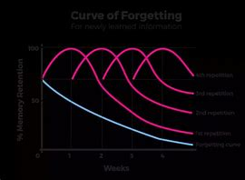

Best Study Techniques
Many study techniques can help improve your focus and effectiveness. Here are some of them:

Pomodoro Technique
A time management technique where you work for 25 minutes and then take a 5-minute break. This helps maintain focus and prevents quick burnout.
⏳ How does it work?
- Study for 25 minutes without distractions.
- Take a 5-minute break.
- After 4 study sessions, take a longer break (15-30 minutes).

Active Recall
This technique involves actively recalling information, rather than just reading it. For example, ask yourself questions without looking at your notes or use flashcards.
🧠 How does it work?
- Read a concept and close the book.
- Try to recall what you just read without looking at the source.
- Ask yourself questions like: "Why is this concept important?"
- Write the idea in your own words or try explaining it as if teaching someone else.

Spaced Repetition
A technique of reviewing material at set intervals (e.g., today, after 2 days, after 1 week). This helps prevent forgetting information quickly.
🧠 How does it work?
- Learn a concept for the first time.
- Review it after a short period (e.g., one day).
- Review again after a few days, then after a week, then after a month.
- The more you space out the repetitions, the better your long-term memory retention.